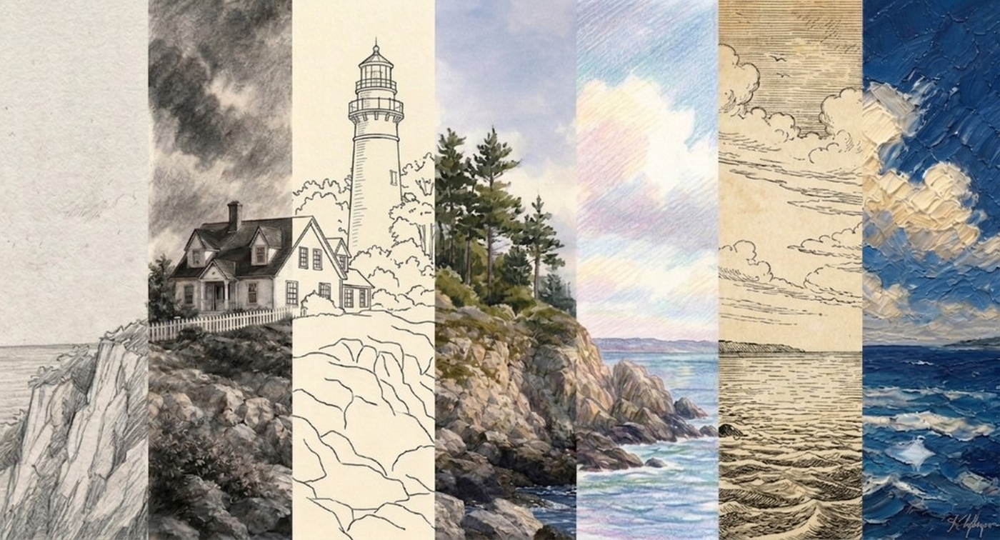

Materials
Building a Beginner's Sketch Kit
Paper, pencils, erasers, and a portable kit that is enough to start sketching today.
Read article
Honest material recommendations, simple techniques for beginners, and artists worth knowing.
Practical guides and inspiration for your creative journey.
Paper, pencils, erasers, and a portable kit that is enough to start sketching today.
Read articleLight lines, gestural strokes, and simple habits that help beginners draw with more confidence.
Read articleHow van Gogh's daily drawing practice shaped his art — and what sketchers can learn from his notebooks.
Read articleWhat pencil hardness and softness actually mean, and which grades to reach for when sketching or shading.
Read articleSmall daily practices that help beginners loosen up and see more — no talent required.
Read articleHow a Japanese printmaker captured the power of the sea and changed art forever.
Read articleE Blue Artist is a small journal about making art feel approachable. We share the supplies we actually use, techniques that work for beginners, and artists whose work is worth knowing.
Like a lighthouse guiding ships home — we help you find your way through the many ways to draw and paint.